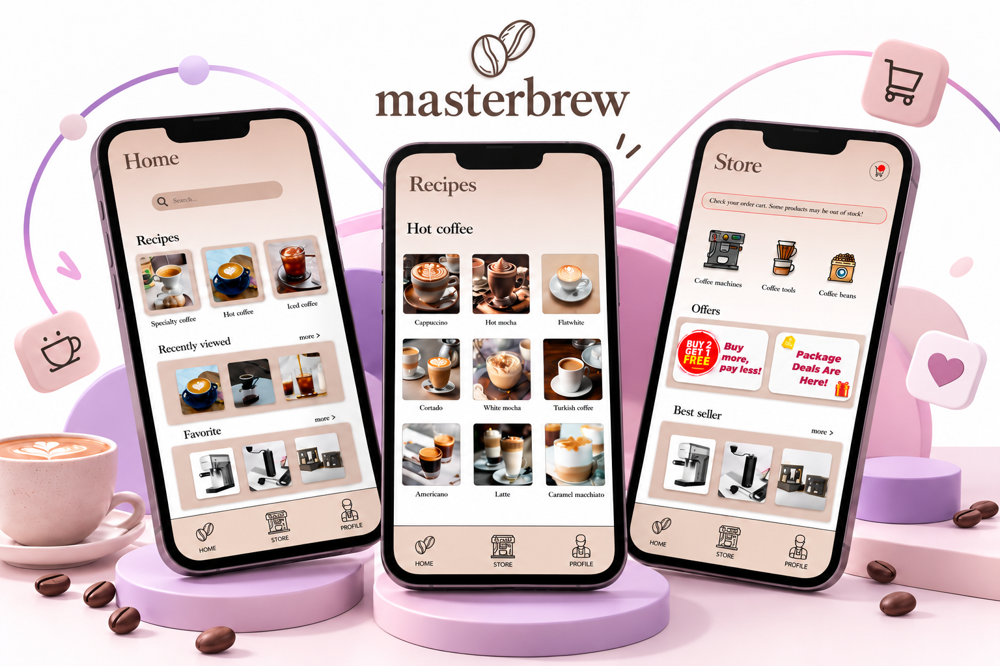

← Back to selected workOVERVIEW MY CONTRIBUTION INTERFACE DESIGN DIRECTION Open live project ↗
4 — UI DESIGN · E-COMMERCE · FIGMA
Master Brew
An e-commerce interface for coffee beans and brewing tools, designed in Figma.

Master Brew is an e-commerce concept for coffee lovers to explore coffee beans and brewing tools and complete purchases.
Most of the UI design was completed by me in Figma, and I also refined some screens created by teammates.
The main screens included Home, Products, Product Details, Cart, Checkout, and Account, with a connected Figma prototype.
The final direction included persuasive design techniques while keeping the purchase flow clear and focused.